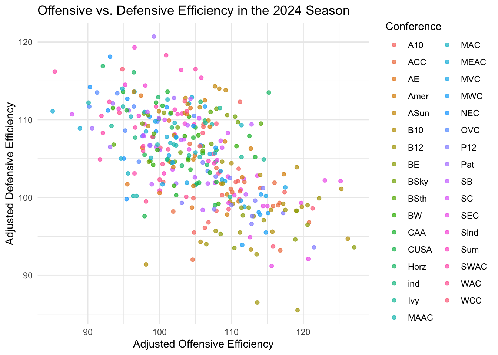

library(tidyverse)
basketball <- read_csv("cbb.csv")STAT 331/531 Final Project: Checkpoint 3 Progress Report
Introduction
In this lab, we will analyze Division I college basketball data from the 2013-2026 seasons. The dataset includes team statistics such as wins, losses, offensive efficiency, defensive efficiency, strength of schedule, and tournament-related performance measures.
The goal of this lab is to practice data wrangling, visualization, and functional programming skills using real sports analytics data. This dataset works well for the lab because it contains multiple years of observations, categorical and numeric variables, opportunities for grouping and summarizing, and enough complexity for writing functions and iteration tasks.
Dataset Source
College Basketball Dataset from Kaggle: https://www.kaggle.com/datasets/andrewsundberg/college-basketball-dataset/data
Data Dictionary: Selected Variables
| Variable | Description |
|---|---|
TEAM |
Team name |
CONF |
Conference |
YEAR |
Season year |
G |
Games played |
W |
Wins |
ADJOE |
Adjusted offensive efficiency |
ADJDE |
Adjusted defensive efficiency |
BARTHAG |
Power rating metric |
EFG_O |
Effective field goal percentage on offense |
EFG_D |
Effective field goal percentage allowed on defense |
TOR |
Turnover rate |
WAB |
Wins above bubble |
Learning Goals
This lab is intended to assess the following skills:
- Using
dplyrverbs for efficient data manipulation. - Creating data visualizations with
ggplot2. - Writing functions that take user inputs and return data frame outputs.
- Using string and data-cleaning tools to prepare data for analysis.
- Interpreting statistical graphics and summaries in context.
Setup
Lab Questions
Question 1: Data Wrangling
Create a new dataset containing only teams from the 2024 season.
Then:
- Select the variables
TEAM,CONF,W,ADJOE, andADJDE. - Arrange the teams from most wins to fewest wins.
- Display the first 10 rows.
Solution
basketball_2024 <- basketball %>%
filter(YEAR == 2024) %>%
select(TEAM, CONF, W, ADJOE, ADJDE) %>%
arrange(desc(W))
head(basketball_2024, 10)# A tibble: 10 × 5
TEAM CONF W ADJOE ADJDE
<chr> <chr> <dbl> <dbl> <dbl>
1 Connecticut BE 31 127. 93.6
2 James Madison SB 31 112 100.
3 Houston B12 30 119. 85.5
4 McNeese St. Slnd 30 111. 101
5 Purdue B10 29 126. 94.7
6 Grand Canyon WAC 29 111. 99.8
7 Samford SC 29 112. 102.
8 Drake MVC 28 115. 100.
9 Vermont AE 28 104. 98.7
10 Indiana St. MVC 28 118. 101. Question 2: Visualization
Using the 2024 season data, create a scatterplot showing the relationship between adjusted offensive efficiency (ADJOE) and adjusted defensive efficiency (ADJDE). Color the points by conference.
Then answer the following questions:
- Which teams appear to be strongest overall?
- Do certain conferences appear clustered together?
Solution
basketball_2024 %>%
ggplot(aes(x = ADJOE, y = ADJDE, color = CONF)) +
geom_point(alpha = 0.7) +
labs(
title = "Offensive vs. Defensive Efficiency in the 2024 Season",
x = "Adjusted Offensive Efficiency",
y = "Adjusted Defensive Efficiency",
color = "Conference"
) +
theme_minimal()
Strong teams generally appear with high offensive efficiency and low defensive efficiency. Some conferences may show visible clustering, suggesting similar performance levels among teams in the same conference.
Question 3: Functions: Week 7+ Material
Write a function called top_team() that:
- takes a conference name as input,
- filters the dataset to the 2024 season,
- and returns the team with the highest number of wins in that conference.
Test your function using the "WCC" and "SEC" conferences.
Solution
top_team <- function(conf_name) {
basketball %>%
filter(YEAR == 2024, CONF == conf_name) %>%
arrange(desc(W)) %>%
slice(1) %>%
select(TEAM, CONF, W)
}top_team("WCC")# A tibble: 1 × 3
TEAM CONF W
<chr> <chr> <dbl>
1 Saint Mary's WCC 26top_team("SEC")# A tibble: 1 × 3
TEAM CONF W
<chr> <chr> <dbl>
1 Auburn SEC 27Planned Additions for Final Submission
For the final version of the lab, we plan to include simulation-based questions, iteration using map(), more advanced visualizations, and challenging multi-step data wrangling problems.
We also plan to add 8–12 total questions, a complete solutions document, and a short written reflection discussing the learning goals and design of the lab.